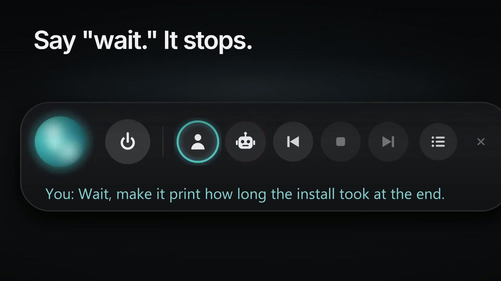
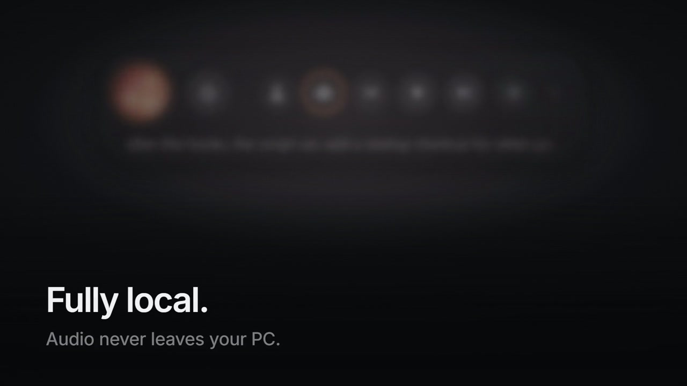

Listen
Local speech input through Whisper.
Talkover
Hands-free, two-way voice for Claude Code on Windows. Speak into a coding session, hear the response, and interrupt playback when you need to.
Local speech input through Whisper.
Spoken agent replies through Kokoro.
Stop playback and pick up the conversation.

